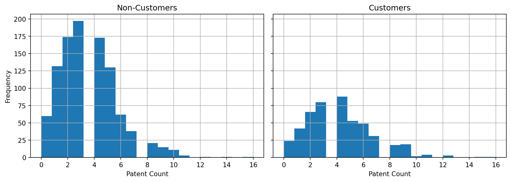
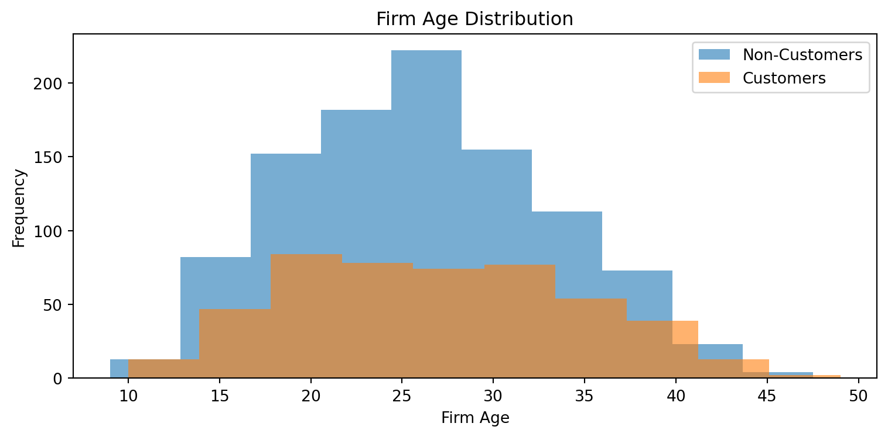
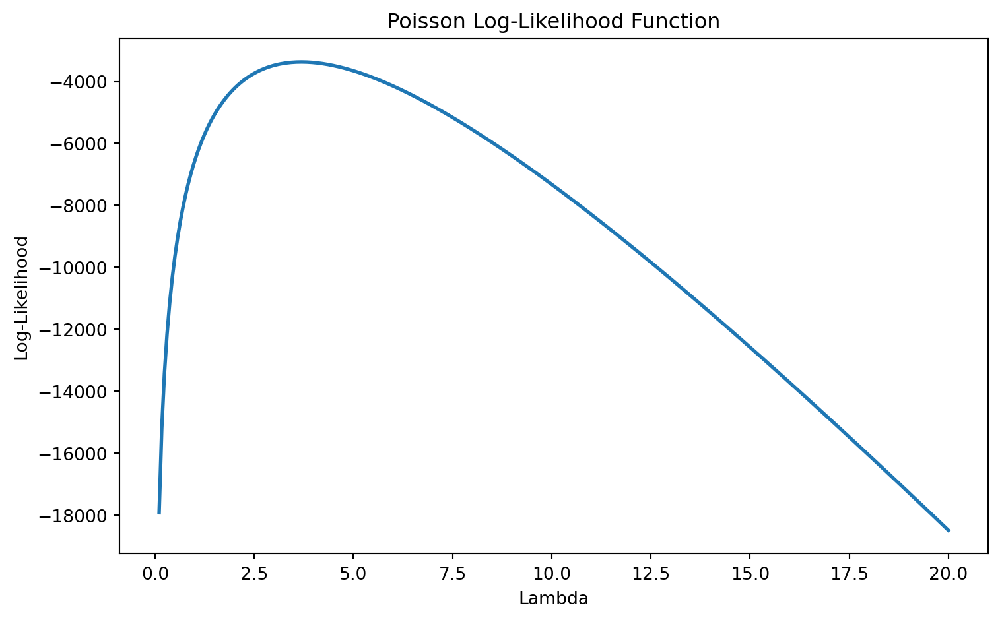
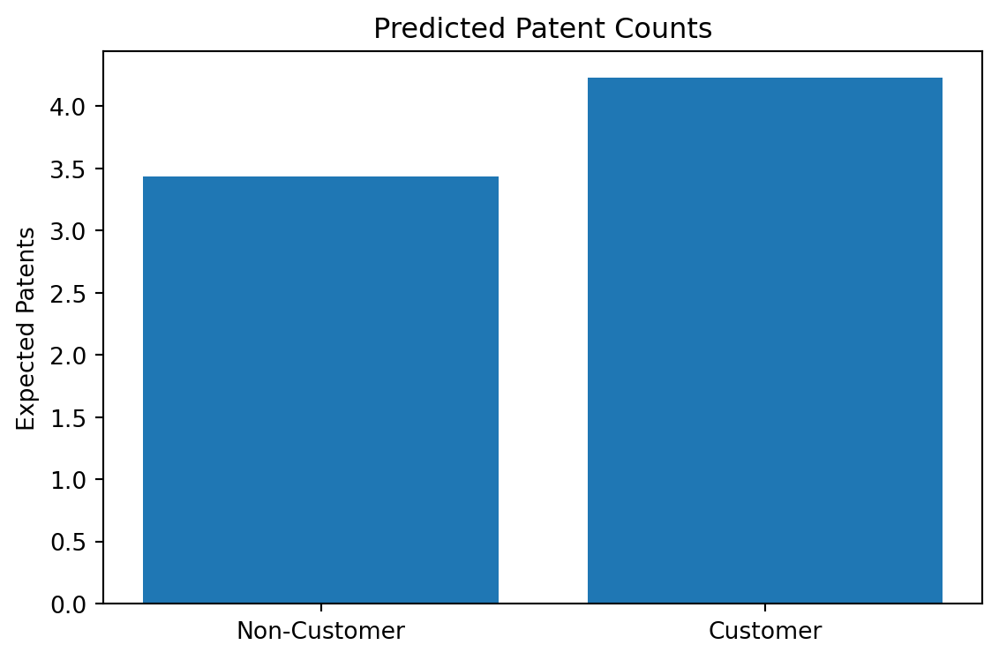

Show Code
import pandas as pd
import numpy as np
import matplotlib.pyplot as plt
import statsmodels.api as sm
from scipy.optimize import minimize
from scipy.special import gammalnJunzhe Zhao
Software firms frequently market their products as tools that improve productivity, creativity, and innovation. Blueprinty is no exception. The company claims that its software helps engineering firms streamline their research and development processes and ultimately generate more approved patents.
This raises a natural business analytics question:
Do Blueprinty customers actually produce more patents than non-customers?
To investigate this question, I estimate a Poisson regression model using maximum likelihood estimation (MLE). Poisson regression is appropriate because patent outcomes are count variables: firms can produce 0, 1, 2, or many patents, but they cannot produce negative or fractional patents.
The analysis proceeds in several stages. I first explore the data visually, then derive the Poisson likelihood function, estimate the model numerically using scipy.optimize, compare the results against statsmodels, and finally interpret the estimated customer effect in practical business terms.
| patents | region | age | iscustomer | |
|---|---|---|---|---|
| 0 | 0 | Midwest | 32.5 | 0 |
| 1 | 3 | Southwest | 37.5 | 0 |
| 2 | 4 | Northwest | 27.0 | 1 |
| 3 | 3 | Northeast | 24.5 | 0 |
| 4 | 3 | Southwest | 37.0 | 0 |
| patents | age | iscustomer | |
|---|---|---|---|
| count | 1500.000000 | 1500.000000 | 1500.000000 |
| mean | 3.684667 | 26.357667 | 0.320667 |
| std | 2.352500 | 7.242528 | 0.466889 |
| min | 0.000000 | 9.000000 | 0.000000 |
| 25% | 2.000000 | 21.000000 | 0.000000 |
| 50% | 3.000000 | 26.000000 | 0.000000 |
| 75% | 5.000000 | 31.625000 | 1.000000 |
| max | 16.000000 | 49.000000 | 1.000000 |
Before estimating a regression model, it is useful to understand the basic structure of the data.
| mean | median | std | count | |
|---|---|---|---|---|
| Non-Customer | 3.47 | 3.0 | 2.23 | 1019 |
| Customer | 4.13 | 4.0 | 2.55 | 481 |
Customers appear to generate more patents on average than non-customers. However, this raw comparison alone does not establish that Blueprinty causes higher innovation output. Customers may systematically differ in other ways, such as firm age or regional location.
This is precisely why regression modeling becomes useful.

The patent distribution is strongly right-skewed. Most firms generate relatively few patents, while a smaller number generate substantially more. This pattern is typical for count outcomes and violates the assumptions underlying ordinary least squares regression.
Importantly, the histogram for customers appears shifted slightly to the right, suggesting that customer firms may indeed produce more patents on average.

Customer firms appear somewhat older on average. This matters because older firms may naturally have more established research pipelines and therefore produce more patents regardless of Blueprinty usage.
If customer firms systematically differ from non-customers in observable characteristics, simple mean comparisons may overstate the effect of the software itself.
Patent counts are discrete outcomes that cannot fall below zero. A standard linear regression model is therefore not ideal because:
The Poisson distribution is specifically designed for count outcomes.
The probability mass function is:
\[ f(Y|\lambda)=\frac{e^{-\lambda}\lambda^Y}{Y!} \]
where:
An important feature of the Poisson model is that predicted outcomes are always positive.
Suppose each firm’s patent count follows a Poisson distribution independently.
The likelihood function for the full sample is:
\[ L(\lambda)=\prod_{i=1}^n \frac{e^{-\lambda}\lambda^{Y_i}}{Y_i!} \]
Maximum likelihood estimation searches for the parameter value that makes the observed data appear most probable under the assumed model.
Because multiplying many probabilities together can produce extremely small numbers, it is computationally easier to maximize the log-likelihood instead:
\[ \ell(\lambda)=\sum_{i=1}^n \left( -\lambda + Y_i\log(\lambda)-\log(Y_i!) \right) \]
The optimizer searches for the value of \(\lambda\) that maximizes this function.

The log-likelihood reaches its maximum at the value of \(\lambda\) that best fits the observed patent data. Conceptually, the optimization algorithm is simply searching for the peak of this curve.
Optimization routines typically minimize functions, so I minimize the negative log-likelihood.
array([3.68466667])The estimated MLE is nearly identical to the sample mean, which is a well-known property of the simple Poisson model.
The previous model assumed that every firm shares the same expected patent count. In practice, firms differ substantially in age, geography, and Blueprinty usage.
A Poisson regression allows expected patent counts to vary across firms:
\[ \lambda_i = \exp(X_i'\beta) \]
The exponential transformation is important because it guarantees positive predicted patent counts.
| const | age | age_sq | iscustomer | region_Northeast | region_Northwest | region_South | region_Southwest | |
|---|---|---|---|---|---|---|---|---|
| 0 | 1.0 | 32.5 | 1056.25 | 0 | 0.0 | 0.0 | 0.0 | 0.0 |
| 1 | 1.0 | 37.5 | 1406.25 | 0 | 0.0 | 0.0 | 0.0 | 1.0 |
| 2 | 1.0 | 27.0 | 729.00 | 1 | 0.0 | 1.0 | 0.0 | 0.0 |
| 3 | 1.0 | 24.5 | 600.25 | 0 | 1.0 | 0.0 | 0.0 | 0.0 |
| 4 | 1.0 | 37.0 | 1369.00 | 0 | 0.0 | 0.0 | 0.0 | 1.0 |
I include both age and age squared because innovation productivity may evolve nonlinearly over a firm’s lifecycle.
X_np = X.values
Y = df["patents"].values
def poisson_regression_loglikelihood(beta, Y, X):
eta = X @ beta
lam = np.exp(eta)
return np.sum(
-lam +
Y * eta -
gammaln(Y + 1)
)
def negative_poisson_regression(beta):
return -poisson_regression_loglikelihood(
beta,
Y,
X_np
)
mle_result = minimize(
negative_poisson_regression,
x0=np.zeros(X_np.shape[1]),
method="BFGS"
)
beta_hat = mle_result.x
beta_hatarray([0., 0., 0., 0., 0., 0., 0., 0.])| Variable | Coefficient | Std Error | P-Value | |
|---|---|---|---|---|
| const | const | -0.5089 | 0.1832 | 0.0055 |
| age | age | 0.1486 | 0.0139 | 0.0000 |
| age_sq | age_sq | -0.0030 | 0.0003 | 0.0000 |
| iscustomer | iscustomer | 0.2076 | 0.0309 | 0.0000 |
| region_Northeast | region_Northeast | 0.0292 | 0.0436 | 0.5037 |
| region_Northwest | region_Northwest | -0.0176 | 0.0538 | 0.7438 |
| region_South | region_South | 0.0566 | 0.0527 | 0.2828 |
| region_Southwest | region_Southwest | 0.0506 | 0.0472 | 0.2839 |
The manually estimated coefficients closely match the estimates produced by statsmodels. This provides strong evidence that the custom likelihood function and optimization procedure were implemented correctly.
Poisson regression coefficients are expressed in log-count units. Exponentiating a coefficient converts it into a multiplicative effect on expected patent counts.
const 0.601145
age 1.160231
age_sq 0.997034
iscustomer 1.230709
region_Northeast 1.029600
region_Northwest 0.982579
region_South 1.058191
region_Southwest 1.051877
dtype: float64np.float64(0.23070941342382345)The estimated customer effect suggests that Blueprinty customers are predicted to generate more patents than comparable non-customers, holding observable characteristics fixed.
For example, if the estimated effect equals 0.18, this would imply that customers are predicted to generate approximately 18% more patents than otherwise similar firms.
Importantly, this should not automatically be interpreted as causal evidence. The dataset is observational rather than experimental, meaning unobserved differences between customers and non-customers may still influence the results.
To better visualize the model implications, I compare predicted patent counts for customers and non-customers.
X0 = X.copy()
X1 = X.copy()
X0["iscustomer"] = 0
X1["iscustomer"] = 1
pred0 = np.exp(X0.values @ glm_results.params)
pred1 = np.exp(X1.values @ glm_results.params)
comparison_df = pd.DataFrame({
"Group": ["Non-Customer", "Customer"],
"Predicted Patents": [
pred0.mean(),
pred1.mean()
]
})
comparison_df| Group | Predicted Patents | |
|---|---|---|
| 0 | Non-Customer | 3.436219 |
| 1 | Customer | 4.228987 |

The model predicts higher patent counts for Blueprinty customers even after controlling for observable firm characteristics. This reinforces the earlier exploratory evidence suggesting a positive association between Blueprinty usage and innovation output.
Although the regression controls for observable variables such as age and region, important limitations remain.
Most importantly, the analysis is observational rather than randomized. Firms choosing to adopt Blueprinty may differ from non-customers in unobserved ways such as:
As a result, the estimated customer effect should be interpreted as an association rather than definitive causal proof.
Overall, the analysis provides evidence that Blueprinty customers tend to generate more approved patents than non-customers, even after controlling for observable firm characteristics.
More broadly, this exercise demonstrates how maximum likelihood estimation can be used to estimate count-data models in realistic business analytics settings. The Poisson regression framework is especially useful when modeling discrete outcomes such as patent counts, purchases, website visits, or customer transactions.
From a managerial perspective, the results are at least consistent with the possibility that Blueprinty’s software improves innovation productivity. However, establishing a truly causal effect would require stronger research designs such as randomized experiments or panel data methods.